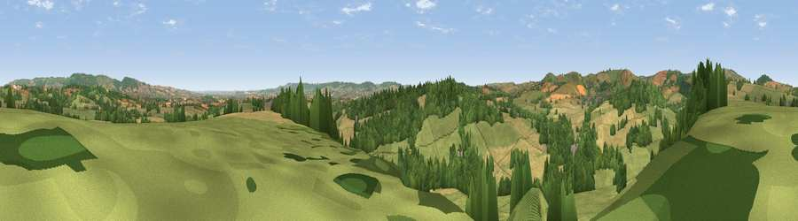

Viewpoint near Fitzhead
#13697 in England · top 29% of its area beats it · near FitzheadThe view, rendered

A 360° render of this exact spot computed from the terrain model, tree cover and land cover — summer colours, afternoon light, calibrated against photographs of famous viewpoints. Real trees, hedges and buildings will differ in detail.
The panorama
Grey silhouette: terrain skyline in each direction (720 bearings, Earth curvature and refraction included). Dashed green: skyline with trees (+15 m) and buildings (+8 m) as obstacles. Blue strip: how far the ground is visible on each bearing.
Where the view opens
Wedge length = distance to the farthest visible ground on that bearing (vegetation-aware). Rings at 10, 25 and 50 km.
What fills the view
50% grassland · 26% woodland · 23% cropland ·
Angular shares of the visible panorama (visual magnitude), not map area. Landscape diversity 0.46 (0–1 Shannon).
Key numbers
More beautiful places nearby
The staircase of upgrades: each row has a higher view potential than everything closer. Driving times are estimates from straight-line distance, calibrated against real road routing — check an actual route before setting out.
| Place | Direction | Drive | Score |
|---|---|---|---|
| Viewpoint near Milverton | SSW · 2 km | ~5 min | 65.1 |
| Viewpoint near Ash Priors | NE · 3 km | ~7 min | 65.9 |
| North Down | WSW · 5 km | ~11 min | 71.7 |
| Viewpoint near Wiveliscombe | WSW · 5 km | ~11 min | 75.1 |
| Viewpoint near Elworthy | NNW · 7 km | ~15 min | 75.6 |
| Viewpoint near Elworthy | NNW · 9 km | ~17 min | 79.2 |
| Viewpoint near West Bagborough | NNE · 9 km | ~18 min | 84.6 |
| Wills Neck | NE · 9 km | ~18 min | 85.7 |
51.04109, -3.26834 · source: screening · position refined by local search. Computed location — check access rights before visiting.